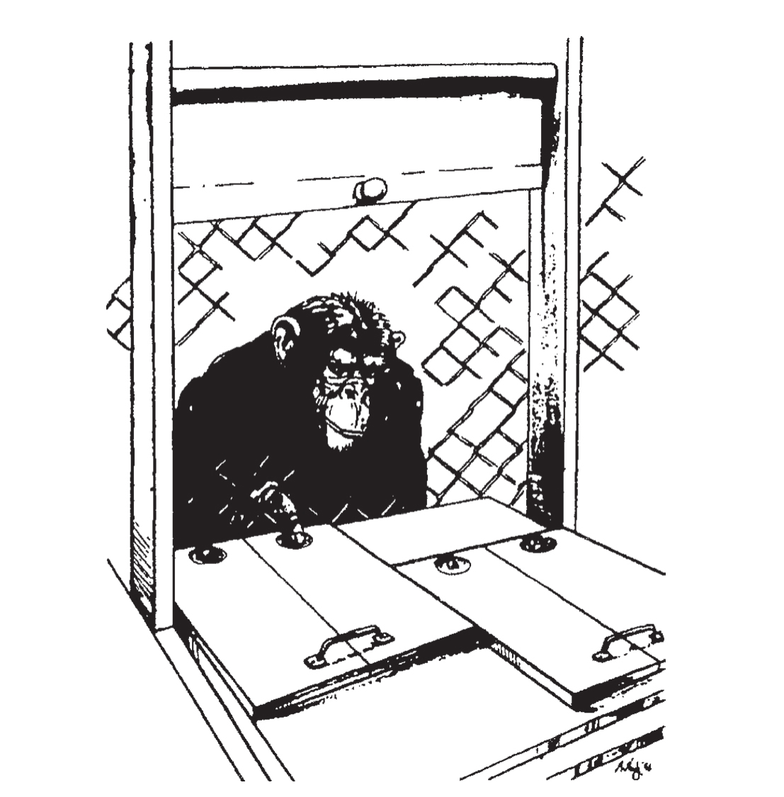

对于老鼠来说，按压2次操作杆、听到2个声音、吃2粒种子，能否让它们意识到这些事件都是数量“2”的实例呢？或者它们能否发现来源于不同知觉通道的数字之间的联系呢？在不同知觉通道和动作形式之间对数量进行概括的能力是数量概念（number concept）的重要组成部分。举一个极端的例子，我们假设一个儿童在看到4件物品时能够稳定地说出数词“4”，但在听到4个声音或跳了4下时可能会随机地在数词“3”“4”和“9”之间选择一个。虽然这个儿童在面对视觉刺激时有出色的表现，但是我们仍然不能认为这个儿童有“4”的概念，因为掌握这个概念就意味着能够将其运用到各种不同的通道情境中。事实上，一旦儿童掌握了一个数量，他们立刻就能够用它计算玩具车的数量，数出小猫叫了几声，或者能用它计算弟弟干了几件坏事。对于老鼠来说，情况又是怎样的呢？它们的数学能力是局限于某种知觉通道，还是抽象的？
鉴于对动物多通道知觉泛化的研究成功的很少，所有答案都只是尝试性的解释。不过，丘奇和梅克8已经证明，老鼠对数量进行表征时，是将其看作一个抽象参数的，而不是局限于听觉或者视觉等某一特定的知觉通道。他们再一次将老鼠放入一个有两个操作杆的笼子中，但是这次同时使用了视觉和听觉刺激序列。由于此前的学习，老鼠会条件反射地在听到2个音时按压左边的操作杆，听到4个音时按压右边的操作杆。这次，它们又被训练在看到2次闪光时按压左侧操作杆，看到4次闪光时按压右侧操作杆。实验的关键在于，这两种学习经历在老鼠的脑中是怎样编码的。它们会将这两种经历作为两项不相干的知识储存在脑中吗？或者，老鼠学会了抽象的规则，比如“2是左，4是右”？为了寻找答案，两位研究者在一些实验轮次中将声音和闪光混合起来同时展现给老鼠。他们惊奇地发现，当他们同时呈现1个音和1次闪光，总共2个事件时，老鼠会立刻按下左侧的操作杆，而当他们呈现2个音和2次闪光所组成的总共4个事件时，老鼠会按压右侧的操作杆。动物们可以将它们的知识类推到全新的情境中。它们对数量“2”和“4”的概念并不仅仅体现在低层次的视知觉和听知觉中。
在同时使用2个音与2次闪光的实验中，老鼠的特殊表现十分值得注意。要知道，在训练过程中，老鼠通常是在听到2个音或看到2次闪光后按压左侧操作杆从而得到奖励的。因此，听觉刺激“2个音”和视觉刺激“2次闪光”都与按压左侧操作杆相关。然而，当这两种刺激同时呈现时，老鼠却按下了与数量“4”相联系的操作杆！为了让大家更好地理解这个发现的重要性，我们可以把它与另一个实验相比较。在这个实验中，老鼠被训练为看到正方形（另一种刺激为圆形）时按压左侧操作杆，看到红色（另一种刺激为绿色）时也按压左侧操作杆。那么当老鼠看到1个红色的正方形，即两种刺激结合起来时，我敢打赌，它们一定会更加坚决地按压左侧的操作杆。为什么在面对声音和闪光组合的刺激与形状和颜色组合的刺激时，它们的表现不一样呢？这个实验说明，在某种程度上，老鼠“知道”，数与数相加和形状与颜色相加的方式并不相同。1个正方形加上红色就成了1个红色的正方形，但是2个音加上2次闪光却不能引发对“2”这个数更强的感受。确切地说，老鼠的脑似乎可以领会蕴含在“2+2=4”中的算术基本法则。
动物具有抽象的加法能力的最好例证或许来自美国宾夕法尼亚大学的盖伊·伍德拉夫（Guy Woodruff）和戴维·普雷马克（David Premack）所做的研究9。他们证明了黑猩猩能够进行简单的分数运算。在他们的第一个实验中，黑猩猩的任务十分简单：只要在2件物品中选出与给定物品外观相同的那一个，黑猩猩就能得到奖励。例如，实验者向黑猩猩展示一个盛有1/2杯蓝色液体的玻璃杯，黑猩猩就必须从2件物品中选出与此相同的物品。也就是说，盛有1/2杯液体的玻璃杯是正确的选择，因为另一个玻璃杯中的液体占了3/4杯。黑猩猩很快就掌握了这个简单的外观匹配任务。接着，决策变得越来越抽象：实验者仍然向黑猩猩展示一个盛有1/2杯液体的玻璃杯，但选项变成了1/2个苹果和3/4个苹果。从外观上看，两个选项均与样例相去甚远，然而黑猩猩仍能够选择1/2个苹果，显然是1/2杯液体和1/2个苹果在概念上的相似性使它做出了这个决定。对分数1/4、1/2、3/4的测试都同样取得了成功：这只黑猩猩知道一整个馅饼的1/4与一整杯牛奶的1/4具有相同的意义。
在最后的实验中，伍德拉夫和普雷马克证明了黑猩猩甚至能够对2个分数的加法进行心算：当样例由1/4个苹果和1/2杯液体组成时，面对一整个圆盘和3/4个圆盘，它们中的大部分选择了后者，这比完全随机所预期的概率要高很多。显然它们对两个分数进行了心算，与分数的加法运算“1/4+1/2=3/4”没有什么不同。据推测，它们并没有像我们一样使用复杂的符号计算法，但是它们显然直觉般知道这些比例该怎样相加。
最后说一则关于伍德拉夫和普雷马克研究的轶事。起初，他们研究手稿的标题是“黑猩猩的原始数学概念：比例和数量”（Primitive mathematical concepts in the chimpanzee: proportionality and numerosity），一个编辑错误导致了它在科学期刊《自然》上的标题变成了“灵长类动物的数学概念”（Primative mathematical concepts）(6)！虽然这属于无心之失，但是这个改动并不是完全错误的。事实上，用“原始”（primitive）一词来描述这种能力是不恰当的。如果primative在这里指的是“灵长类动物所特有的”（specific to primates），那么这个新词用在这里就显得十分恰当，因为这种对分数进行相加的抽象能力至今还没有在其他物种中发现过。
另外，加法并不是动物在数字运算方面的全部本领，比较两个数量的多少是更为基础的能力，而且这种能力确实在动物中普遍存在。实验者向黑猩猩展示两个放着几小块巧克力的托盘10，第一个托盘上有两堆巧克力，其中一堆有4块，另一堆有3块。第二个托盘上也有两堆巧克力，一堆有5块，还有1块巧克力被单独放置。实验者会给黑猩猩足够长的时间来仔细观察这个情境，然后让它们选择一个托盘并吃掉托盘上的东西。你认为黑猩猩会选择哪个托盘呢？大多数情况下，没有经过训练的黑猩猩会选择放置巧克力总数更多的那个托盘（见图1-5）。贪心的灵长类动物必须自发地计算第一个托盘上巧克力的总数（4+3=7）和第二个托盘上巧克力的总数（5+1=6），最后得出7大于6的结论，从而认为选择第一个托盘有更大的优势。如果黑猩猩不会做加法，而是满足于选出单堆巧克力块数最多的托盘，那么情况就不应该是这样，因为第二个托盘上由5块巧克力组成的那堆比第一个托盘上的任意一堆都多，尽管第一个托盘上巧克力的总数更大。显然，将两数相加和之后进行比较的操作都是其做出成功选择所必需的。

黑猩猩会自发地在两个托盘中选择放置巧克力总数更多的那个托盘，表现出与生俱来的对数量进行相加和粗略比较的能力。
图1-5 黑猩猩的选择
资料来源：重印自Rumbaugh et al., 1987。
虽然黑猩猩在从两个数量中选择较多数量时有非常好的表现，但它们仍会出错。这类错误向我们提供了非常重要的线索，使我们能够了解它们所采用的心理表征的本质11。若两个数量有显著不同，比如2和6，黑猩猩几乎不会出错，它们通常会选择数量多的。但当两个数量越来越接近时，它们的表现会越来越差。当两个数量只相差一个单位时，只有70%的黑猩猩做出了正确的选择。这种错误率和两个数量差距之间的稳定依存关系被称为距离效应（distance effect）。它通常伴随大小效应（magnitude effect）产生。当数量差距相同时，数量越多表现就越差。黑猩猩在得出“2>1”的判断时没有任何困难，即便这两个数量只相差一个单位。但是，当它们比较2和3、3和4等较多的数量时出错率就会提升，数量越多，错误率越高。除了黑猩猩外，相似的距离效应和大小效应在许多任务和许多物种中均被发现，包括鸽子、老鼠，以及海豚。没有一种动物能够逃离这些行为法则——包括人类。
为什么距离效应和大小效应的存在具有重要的意义？因为它们再一次证明了动物不能对数量进行数值性或离散性的表征。只有开始的几个数字——1、2和3，能够被准确地识别。数量一旦变多，判断就会变得模糊。数量内在表征的变异性与表征数量的大小成正比。这就是为什么当数量变多时，动物就很难区分数量n和相邻数量n+1。但是，我们不能由此认为，老鼠或者鸽子的脑不能处理数值大的数量。事实上，当数量间距足够大时，动物仍能够成功地辨别和比较数值很大的两个数量，比如45和50。动物对大数表征的不精确性使它们无法识别49和50在算术上的区别。
虽然受到内部不精确性的限制，但是我们仍然可以通过许多例子证明动物的确拥有实用的数学工具。它们能够将两个数量相加，并自发选出两者中较大的那一个。我们有必要对动物的这种能力感到惊讶吗？试想一下，这些实验还会有其他结果吗？当一只饥饿的狗面对一整盘和半盘同款食物进行选择时，它们难道不会自然地选择数量更多的那盘吗？它若不选一整盘食物，结果可能是灾难性的，这种行为并不合理。恐怕对于所有生物来说，选择两份食物中较多的那一份都是生存的先决条件之一。在进化过程中，动物形成了收集、储存和捕获食物的复杂策略，因此，许多物种拥有“比较两个数量的多少”这种简单能力也不应当令人感到惊讶。心理比较的算法很可能在更早以前就出现了，甚至很可能在进化过程中被彻底改造了许多次。毕竟，即便是最原始的有机生命体也必须永无止境地寻找最适宜的环境：最多的食物，最少的捕食者，最多的异性配偶，等等。生命体为了生存，必须不断地做出最优的选择，而为了选择最优，就必须学会比较。
我们还需要了解进行此类计算和比较的神经机制。鸟、老鼠和灵长类动物的脑中存在微型计算器吗？它们是怎么运作的？